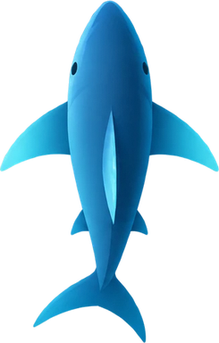
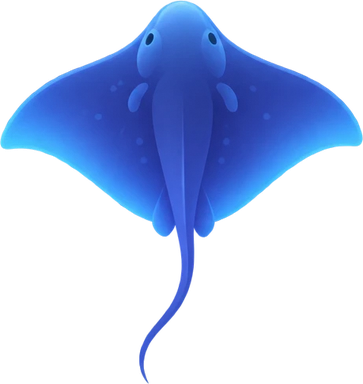
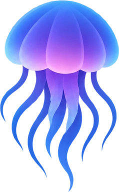
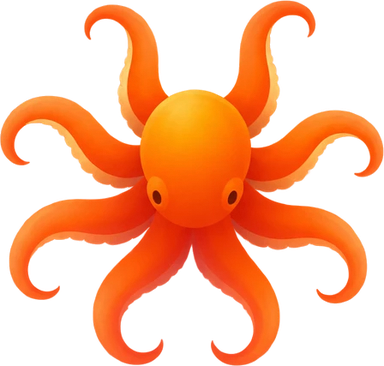

O aquário agora é visto de cima, então a progressão deixa de ser "descer" e passa a ser viajar. Os pontos do dia, que já existem (tarefas, hábitos e rotinas, com teto de 150 por dia e que nunca diminuem), levam o seu aquário a regiões novas. Você escolhe em qual região o lago mora, cada região dá um enfeite, e cada criatura sobe de nível com os dias feitos. Os metros saem de cena.
Ganhe regiões · com os pontos de sempreEscolha onde o lago mora · qualquer região já ganhaUm enfeite por região · só beleza, liga e desligaNível por criatura · o estágio acompanha o nívelSem metros · "faltam 120 pontos para o Recife"
As 6 regiões
Cada uma muda a água, a luz e as bordas do lago, e dá um enfeite. Com ~100 pontos por dia: Recife em ~3 dias, Kelp em ~10, Mar Aberto em ~1 mês, Fossa Bioluminescente em ~2 meses, Marianas em ~4 meses.
Enfeite: vitória-régia
🏝️ Lagoadesde o início
Água verde e rasa, folhas nas bordas. É o lago de hoje.

Enfeite: coral
🪸 Recife de Coral300 pontos
Turquesa clara, corais rosados e laranja nas bordas, manchas de areia.
Enfeite: kelp dourado
🌿 Floresta de Kelp1.000 pontos
Verde-oliva profundo, fitas de kelp dourado subindo pelas bordas.

Enfeite: âncora
🌊 Mar Aberto2.500 pontos
Azul profundo, linhas de luz do sol dançando na água.

Enfeite: lanterna que brilha
✨ Fossa Bioluminescente5.500 pontos
Azul-noite com pontinhos de luz; as criaturas ganham um brilho suave.

Enfeite: baú do fundo
🏁 Fossa das Marianas10.994 pontos
Quase preta, um feixe de luz lá de cima. O marco final (os 10.994 são a profundidade da fossa real, de lembrança).
No celular
O mapa (Perfil → Regiões, e pelo selo da região)
Regiões
3 de 6 · 1.320 pontos
🏝️
Lagoa
🪸
Recife de Coralno seu lago
🌿
Floresta de Kelp
🔒
Mar Abertofaltam 1.180
🔒
Bioluminescente5.500
🔒
Marianas10.994
Visto de cima, como o lago. Cada região ganha fica colorida; a que está no seu lago tem o anel areia. Tocar numa ganha mostra o lago dela e "Usar no meu lago".
Escolher a região e os enfeites
Seu lago
Personalizar → Aquário
Região 3 de 6
Lagoa
Recife de Coralno seu lago
Floresta de Kelp
🔒 Mar Abertofaltam 1.180 pontos
Enfeites ligue os que quiser
🪷Vitória-régia
🪸Coral
🌿Kelp dourado
⚓Âncora · Mar Aberto
Qualquer região já ganha pode ser a do lago, e os enfeites de todas as regiões ganhas se misturam (um coral na Lagoa, por exemplo). Ficam nas bordas, sem atrapalhar as criaturas.
Nível da criatura (a tela da criatura)
Para hoje
EstudarNível 7Jovem
Tubarão · Todo dia
240 XP · faltam 20 para o nível 8
Evolução
✓Filhote nív. 1–5
●Jovem nív. 6–9
Adulto nív. 10+
HOJE
Ainda dá tempo
✓ Marcar hoje · +15 XP
Cada dia feito dá XP (15 num dia previsto, 8 num dia de folga: os mesmos pontos do app). O estágio acompanha o nível, e a criatura adulta continua subindo.
Ao ganhar uma região
Nova região
Recife de Coral 🪸
Você chegou com 300 pontos. Ganhou o enfeite Coral.
Usar no meu lagoDepois
A comemoração de hoje, com a prévia do lago novo. "Depois" guarda a região: ela fica para escolher no mapa ou em Personalizar.
Como o nível funciona
XP e níveis (proposta para ajustar com o uso)
Nível
XP total
Estágio
Dias previstos feitos (≈)
1
0
Ovo
0
2
15
Ovo
1
3
45
Filhote
3
4 · 5
75 · 110
Filhote
5 · 7
6
150
Jovem
10
7 · 8 · 9
200 · 260 · 340
Jovem
13 · 17 · 23
10
450
Adulto
30
11, 12…
+150 por nível
Adulto
+10 dias
Os níveis caem exatamente onde os estágios de hoje mudam (3, 10 e 30 dias), então ninguém perde nada com a troca.
Tubarão e raia continuam nascendo filhotes (nível 1 já é Filhote).
Nunca diminui por perder um dia; desmarcar um dia tira o XP daquele dia.
O que muda e o que some
Somem os metros do Início, do Perfil, da barra lateral e das Estatísticas. O cartão "Profundidade" do Início vira "Região": a região do lago e "faltam N pontos para a próxima".
As 9 zonas viram 6 regiões. Quem já tem pontos já ganha as regiões correspondentes na hora.
Os selos de zona viram selos de região.
As regras de pontos não mudam (nem o teto de 150 por dia). Nada de SQL: a região escolhida e os enfeites ligados são preferências, como as de hoje.
Em que ordem codar (cada uma com checkpoint)
12a · Regiões: as 6 regiões no lugar das zonas, a água de cada uma no lago, escolher em Personalizar, cartão "Região" no Início, sem metros.
12b · Enfeites: um por região, ligar e desligar, nas bordas do lago.
12c · Nível da criatura: XP e nível na tela da criatura, nos cartões e no "Seu aquário".
12d · Mapa e comemoração: a tela do mapa e o "Usar no meu lago".
 Enfeite: vitória-régia
Enfeite: vitória-régia
 Enfeite: kelp dourado
Enfeite: kelp dourado